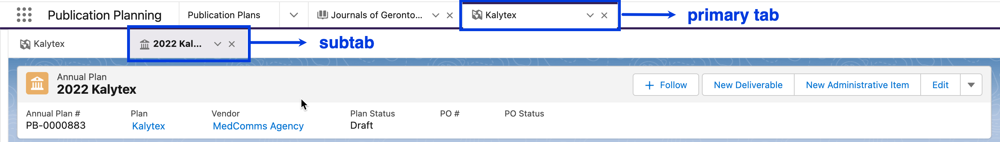
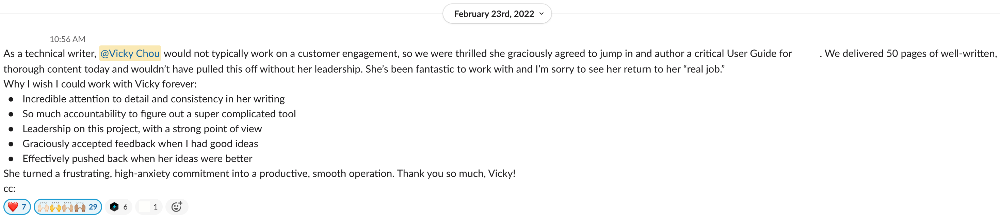

Table of contents
Context
Komodo Publications Planning (KPP), formerly known as Publication Planning (“PUBS”), is Komodo Health (“Komodo”)’s Salesforce solution for helping pharmaceutical companies manage their scientific publications, including planning and drafting the content and budgeting and coordinating the submissions to congresses and journals. Within my first few months of joining Komodo as a technical writer, the opportunity arose to create a PUBS user guide for one of our first and biggest customers. Though our technical writing team had traditionally only delivered administrative guides on our external help site for the company’s Salesforce products, we all agreed that this project would be a great way for our team to both increase our exposure within the company and expand the type of work that we do. When my manager informed us about the project, then, I jumped on to take on the work.
Writing Process
Once I stepped up to create the user guide, I was invited to several meetings to help me better understand the project objective, the key stakeholders, and the product itself. I spent most of the first two weeks attending training sessions, completing the accompanying assignments, and drafting out an initial version of the user guide. The training materials were very crucial to my delivery of the user guide because PUBS was not yet live at the time and there was little to no documentation on the product otherwise.
Information Architecture
Aside from the speed at which I had to learn the product, Salesforce as a platform, and the overall process of how scientific content is ideated, written, and published, deciding the information architecture for the user guide was the most challenging part of this project.
I was primarily conflicted between organizing the content in either features or tasks. I was conflicted because the training sessions that I was attending – and that the clients themselves would receive – presented the product based on the step-by-step tasks that need to be completed throughout the publication planning process, and while the structure of the training sessions made a lot of sense, I was hesitant on producing a user guide that would contain redundant information.
With this concern in mind, I started my first draft with a feature-based approach, using the main components and entities of the product as the main section titles.

a sample of the information architecture of my first draft
Yet, the more I wrote, the more I felt that the organization of my draft did not flow well. I was mixing explanations on how to navigate and use core Salesforce elements and PUBS components with instructions on how to complete certain tasks. Additionally, a large portion of the publication planning process in PUBS relates to the annual plan that organizes the client’s budget and body of work for a single year. This meant that a section completely dedicated to annual plans would become very lengthy very quickly. The section would also be confusing to users because it would assume some prior knowledge about other components in the product. For example, I had created a section under “Annual Plans” called “Create a new line item,” which gave instructions on how to attach a line item to a manuscript. However, I defined and described manuscripts in another section under “Documents” called “Types & Subtypes.” The information architecture of my first draft was therefore contradictory because it assumed that users would both read every single section in order, which users rarely do with reference materials like user guides, as well as skip through the sections to find specific information. I knew I needed to re-evaluate my organization of the content.

some issues I found with the information architecture of my first draft
I decided to create an entirely new draft based on the tasks that need to be completed for publishing a scientific article instead of the features in the product. I then consulted my manager, a former technical writer herself, to review both drafts and give me some feedback on which approach made more sense. We both agreed that the task-based approach seemed better given the user flow of things, so I continued working on my new draft. I was heavily relying on the training sessions to organize my content as I had initially feared, but I knew I had a reason for the approach I was taking.
As I worked my way through all of the training sessions, though, I still ended up creating a “PUBS Framework” section in the beginning of the user guide to introduce the major PUBS components that were frequently reused or referenced. This way, users could first learn about the core components in the product and then continue through the user guide to complete their specific tasks. Ultimately, then, I decided on an information architecture that incorporated both a feature-based and task-based approach with an emphasis on the latter.

a sample of the information architecture of my final draft
Word Choice
As I was drafting the user guide, the Director of Quality, one of the key stakeholders of the project, occasionally came into my document as both a subject matter expert (SME) and a peer reviewer to provide feedback on what I had written. I accepted most of her feedback, but also pushed back on others, such as those on diction.
For one, when she suggested I replace the phrase “Please reference [table/figure/section]” to “See [table/figure/section]”, I advocated against using “See” because it could be ableist or potentially ableist. She agreed to keep my original word choice.
Additionally, because PUBS is built on top of Salesforce, she wanted to ensure that I was not using terminology that was too technical or that may have a different meaning for the users (e.g., “widgets”). Likewise, I wanted to ensure that I was not assuming any Salesforce knowledge of the users (e.g., “highlights panel”). I worked with her to finalize which Salesforce entities I was referring to as “tabs”, “subtabs”, “components”, and “sections” and ended up creating another section in the user guide titled “Basic Navigation” to explain some of the Salesforce entities.
an annotated screenshot I included in the final user guide explaining the different types of tabs in the product
an annotated screenshot I included in the final user guide explaining the different sections and entities in the product
Review Process
The internal stakeholders frequently reviewed and commented on my drafts at the same time that I was writing. Aside from the examples mentioned above about specific changes I was asked to make, there were also several instances where I needed to insert additional sections on content that was not mentioned in any of the training sessions. For those, I simply had to ask the SMEs to walk me through the user flows in the product to craft the new sections. With these additions, I felt even more assured that my user guide would supplement, rather than duplicate, the training sessions.
Final Thoughts
I am very grateful to have had the opportunity to create an exhaustive user guide for a big client. I am especially grateful to my manager and teammates who agreed to let me take on this project even while knowing that I was new to the company, the team, the role, and the product. Through this opportunity, I learned the importance of having a rationale for each word, sentence, paragraph, and section that I write; technical writing is a user-focused craft, and if you can’t explain your reasoning to fellow teammates and stakeholders, you can’t be sure your audience will understand the content you deliver.
Upon submitting the user guide, I was complimented by the Director of Quality in our company-wide peer bonus Slack channel. This project was both challenging and rewarding, and I look forward to more opportunities like it.
